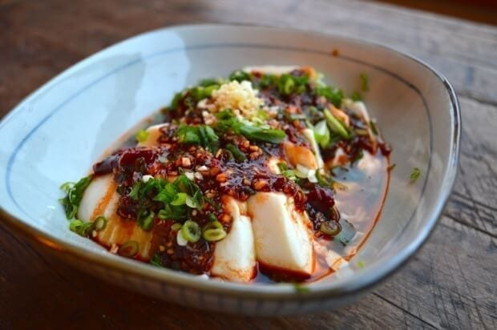

Liangban Doufu

Description
Liangban doufu is an easy to make, savory, and naturally vegan dish. The cuisine is chinese,
and is consumed as a summer dish.
Ingredients
- 1 TBSP Soy Sauce
- 2 TBSP Chili Oil (Laoganma)
- 1 TSP Sesame Oil
- 2 TBSP Minced Garlic
- 2 TBSP Scallion
- 2 8oz Packages Medium Tofu
Directions
- Mix all the ingredients together, but set aside half of garlic and scallions.
- Slice or cube tofu and lay it in your bowl.
- Pour sauce over the tofu, and top with the rest of the garlic and scallions.